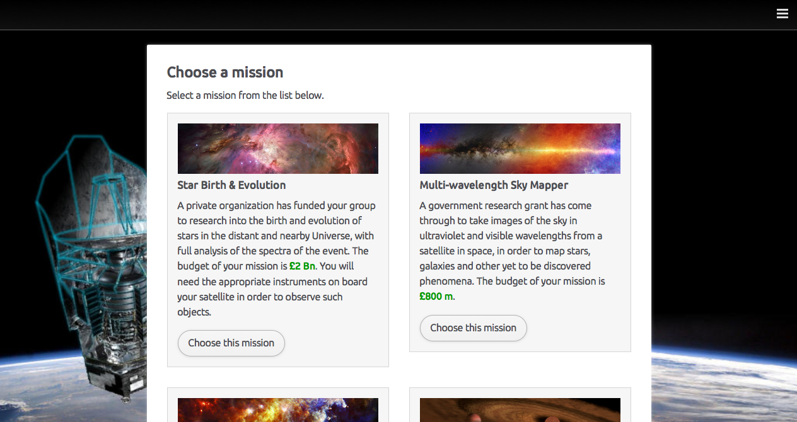
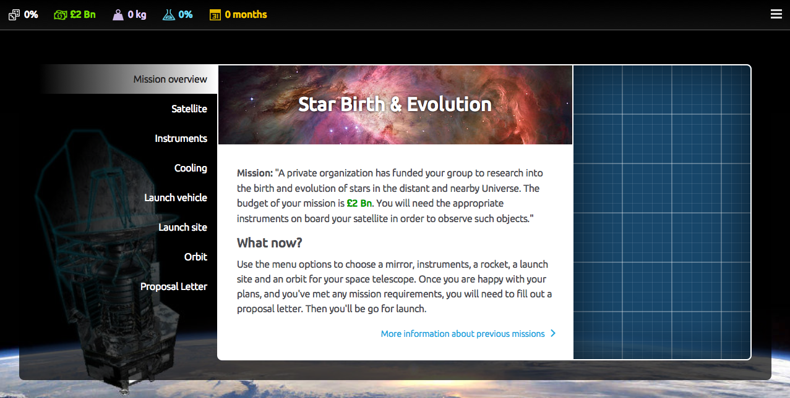
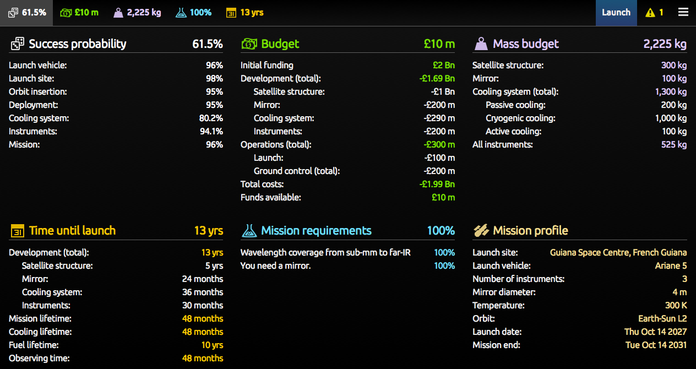
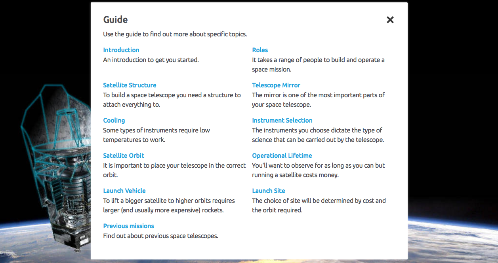
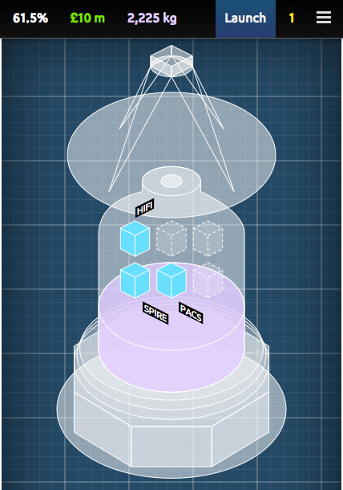

About: Space Telescope Designer
Space Telescope Designer is a web-based application that aims to give students a chance to experience the issues involved in creating their own space telescope. Several mission scenarios are provided and each comes with its own set of requirements including cost, scientific goals, and even demands on specific launch vehicles. Building a mission means balancing these requirements.


Roles
Students can choose to work alone or as part of a group. In groups they could use a number of roles and work together for a final solution. Our suggested roles are:
- Rocket Engineer: The role of the engineer is to ensure that the mass and size of the structure does not surpass the limits of the launcher. The engineer must also select the appropriate launch site, and the orbit from which the satellite will observe.
- Project Manager: The role of the project manager is to ensure that the mission does not go over budget, and to ensure that the risk of overrunning in terms of budget is as low as possible.
- Instrument Scientist: The instrument scientist is in charge of making sure the instruments on-board are appropriate for meeting the science goals, and to ensure that they will be able to meet the scientific requirements.
- Mission Scientist: The mission scientist will ensure that the satellite's mirror and cooling system are suitable for the mission to succeed.
Keeping track of your mission
During the design process the top bar shows a basic summary of your mission from the perspectives of risk, budget remaining, launch mass, science goals, and development time. Clicking on the bar will open up the overview screen which gives a more detailed breakdown of each category as well as the overall mission profile.

Different difficulty settings
There are two levels of difficulty - normal and advanced. In normal mode there are fewer options and, assuming you are given the go to launch, your mission is far more likely to be a success. In the advanced mode there are more options available and more realistic ideas about risk so, just like in real life, risky parts of your mission could fail after all the hard work!
Student guide
To help explain some of the concepts there is an online guide that can be accessed from the menu. The Student Guide can also be downloaded for Key Stage 4 and Key Stage 5 in Microsoft Word format (5 MB).

Different devices
Space Telescope Designer tries its best to adapt to the screen size of the device you are using. That means that if you are using it with a modern smart phone everything should still be usable.

Different units
The default units are SI and, being developed in Britain, the default currency is British pounds. We realise that those aren't to everyone's preference. So, you have the option to change the units. If you'd like US dollars, feet, lbs, and Farenheit you can have those. If you'd like the currency in Euros you can have that too. You can even have doubloons, mass in elephants, and length in blue whales if those take your fancy.
Feedback
We'd love to hear your feedback about Space Telescope Designer. Please let us know about your thoughts via a simple form or, if you have a Github account, you can open an issue directly.
The code
The code is open so you can download and modify it yourself if you want to.